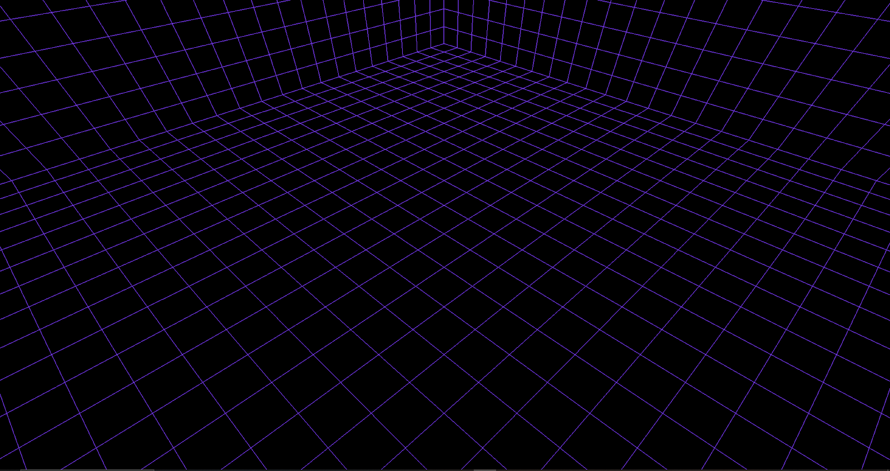

Computer Graphics Projects
C++ | Gateware | DirectX 11 | Vulkan
List of Contributions:

Sprite Rendering and Blitting
Developed a system for rendering and blitting sprites in C++, including:
- Implementing a function to convert 2D coordinates to a 1D array index for raster operations.
- Creating a color blending function to handle transparency and layering of sprites.
- Designing and optimizing a blitting function to render sprites efficiently on the screen.

Environment Setup and Sprite Animation
Created a dynamic environment and animated sprites, including:
- Setting up a tiled background by repeating and blitting a grass texture.
- Randomly placing tree sprites to create a natural-looking environment.
- Implementing an animation system to cycle through fire sprite frames, creating realistic fire effects.

DirectX 11 and Gateware: Cube Rendering with Camera Control
Developed a 3D cube rendering project using DirectX 11 and Gateware, including:
- Implementing vertex and pixel shaders to render a 3D cube.
- Setting up a camera system to navigate around the 3D world.
- Using Gateware for window management and input handling.
- Creating a constant buffer to pass transformation matrices (world, view, projection) to the GPU.
- Implementing camera movement controls to allow the user to move the camera through the scene.